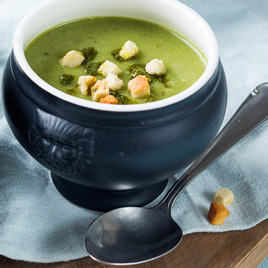

Sperziebonensoep met pesto
Wat doe je met een restje sperziebonen? Maak er deze heerlijke groene soep van!
Ingrediënten
- 250 gr sperziebonen (gewassen en uiteinden verwijderd)
- 1 aardappel (middelgroot)
- 500 ml groentebouillon
- 1 eetlepels pesto + extra
- Croutons voor er bij te serveren
- 1 uitje
- 1 teentje knoflook
Bereidingswijze
- Snipper de ui en knoflook.
- Fruit deze aan in een soeppan in een beetje olie.
- Giet de bouillon er bij en breng aan de kook.
- Voeg de sperziebonen en de aardappel toe en kook ca 15 minuutjes.
- Doe de soep in een blender of mix fijn met de staafmixer.
- Voeg 1 eetlepel pesto toe en roer er door heen.
- Serveer de soep met wat extra pesto en wat croutons
